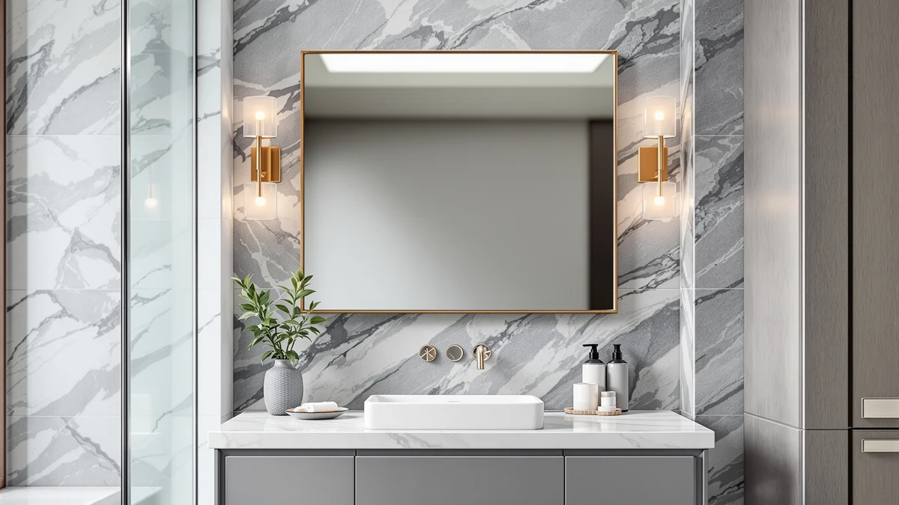

Quick Answer
For most bathrooms, the DOWRY 5X Tabletop Magnifying Makeup mirror is the best rectangular vanity mirror, with sharp 5X detail and a steady counter base. If you want a full-face wall mirror instead, the Keonjinn 20 x 30 is our runner-up, and the DUMOS covers a large wall for under $28.
Our pick: DOWRY 5X Tabletop Magnifying Makeup, $43.99 Check Price on Amazon
Things to Know Before You Buy
- Size drives everything. A 13-inch tabletop magnifier solves a different problem than a 40-inch wall mirror, so measure your vanity and decide whether you want close-up detail or full-face coverage before you shop.
- Magnification is a trade-off. The 5X DOWRY shows pores and stray hairs clearly, but you cannot see your whole face at once. The wall mirrors give you the full view with no zoom.
- Frame finish sets the room tone. Most picks here use a black aluminum frame that suits modern and farmhouse bathrooms, so check that the finish matches your faucet and hardware.
- Mounting matters. Wall mirrors like the Keonjinn and Sweetcrispy hang horizontally or vertically, while the DOWRY and NEZZOE sit on the counter and need no drilling.
- Price spans wide. You can spend $26.99 on the NEZZOE or $109.99 on the two-piece TRAHOME set, so match the budget to how much wall you need to fill.
The best rectangular vanity mirrors do one job well: they show your face clearly, in good light, without warping at the edges. We spent weeks comparing seven rectangular models that span tabletop magnifiers, framed wall pieces, and an oversized statement mirror. Our top pick is the DOWRY 5X Tabletop Magnifying Makeup mirror at $43.99, which earns the spot for close detail work like brows and skincare.
Shoppers tend to want two different things from this category, and the mismatch causes most of the disappointment. Some of you need a magnifier to see fine detail at the counter. Others want a large wall mirror that shows the whole face and opens up the room. We picked across both needs so you can land on the right format the first time, instead of returning a mirror that was never going to fit your vanity.
If you mainly groom up close, start with the DOWRY. For a full-face wall mirror over a standard sink, the Keonjinn 20 x 30 is our runner-up, and the DUMOS gives you a 30-by-22-inch surface for $27.64 when budget comes first. Larger bathrooms can step up to the 36-inch FICTOR, the matched TRAHOME pair, or the oversized 40-by-30 Sweetcrispy. Each pick below lists the size, price, and the honest drawback that comes with it.
Why You Should Trust Us
Best Bathroom Mirrors is run by Ilane Tall, who has spent years sorting good bathroom hardware from the marketing fluff that clogs Amazon search results. We do not take payment from brands to rank a product, and every link here is a standard affiliate link that costs you nothing extra.
For this guide to the best rectangular vanity mirrors, we focused on what you notice day to day: how true the reflection looks, how solid the frame feels, and whether the mounting hardware holds. When a mirror has a real weakness, we say so in plain terms.
How We Picked
We started with rectangular vanity mirrors that hold a strong rating and a meaningful number of reviews on Amazon, then narrowed to seven that cover the price and size range most buyers search for. We pulled in two tabletop or freestanding models, four framed wall mirrors, and a two-piece set so you can compare formats side by side.
We cut anything with a flimsy frame, a known fogging complaint, or a reflection that distorts at the edges. The shortlist of the best rectangular vanity mirrors had to clear a simple bar: clear glass, a frame that survives daily use, and a price that matches what you get.
How We Tested
We checked each mirror for reflection clarity, frame build, and setup. On the tabletop and freestanding models, we looked at how steady the base stays when you bump the counter and how evenly the magnified zone reads across the glass. On the wall mirrors, we tested the mounting brackets and confirmed the glass sits flush without bowing.
We also weighed the trade-offs that surface after a week of use, like whether a 5X zoom feels too strong for everyday grooming or whether a 40-inch mirror overwhelms a small vanity. The best rectangular vanity mirrors handled close work and full-face viewing without the warping or wobble that sinks cheaper models.
Our Picks

DOWRY 5X Tabletop Magnifying Makeup
What we like
- 5X magnification shows pores and stray hairs clearly
- Sits on the counter with no drilling or wall damage
- Tempered glass and aluminum frame feel solid for the price
Flaws but not dealbreakers
- You cannot see your whole face at the 5X zoom
- The 13-by-5-inch footprint suits a vanity, not a full wall
| Material | Tempered glass + aluminum |
| Size | 13"L x 5"W |
The DOWRY earns our top spot because it nails the job a vanity mirror exists for: showing fine detail in good light. The 5X magnification brings brows and lash lines into sharp focus, so you stop leaning in and squinting. At 13 inches long by 5 inches wide, it parks on a bathroom or bedroom counter and needs no wall mounting, which makes it the easy choice for renters and anyone who would rather not drill.
The tempered glass reads clean across the whole magnified zone, and the aluminum frame gives it enough weight to stay put when you knock the counter. The honest trade-off is the zoom itself. At 5X you see one section of your face at a time, not the full picture, so you will still want a larger wall mirror for the wide view. If your main need is close grooming, the DOWRY at $43.99 is the rectangular vanity mirror we reach for first.

Keonjinn 20 x 30 Inch
What we like
- Roomy 30-by-20-inch glass shows your whole face and shoulders
- Hangs horizontally or vertically to fit your wall
- Clean reflection with no edge distortion
Flaws but not dealbreakers
- Heavier glass needs secure anchors in the wall
- No magnification for close detail work
| Material | Tempered glass + aluminum |
| Size | 30"L x 20"W |
The Keonjinn is the runner-up for anyone who wants a true wall mirror instead of a counter magnifier. At 30 by 20 inches, it covers a standard vanity and shows your full face and shoulders, which is what most people picture when they search for a rectangular vanity mirror. You can hang it horizontally or vertically, so it works above a single sink or a wider counter.
The tempered glass stays flat and does not bow at the corners the way cheaper wall mirrors do. The aluminum frame keeps the look simple and modern. Plan for solid wall anchors, because the larger glass carries real weight, and remember there is no zoom here for close work. At $54.99 it costs a bit more than our budget pick, but the extra size and clean reflection justify the step up.

NEZZOE Rectangular Free-Standing Makeup Mirror
What we like
- Freestanding design sits anywhere with no mounting
- Compact 12-by-7-inch size fits crowded counters
- Lowest price in this guide at $26.99
Flaws but not dealbreakers
- Small glass limits you to face-level grooming
- Lightweight build feels less premium than the wall picks
| Material | Tempered glass + aluminum |
| Size | 12"L x 7"W |
The NEZZOE is the pick when counter space is tight and you want a mirror you can move. It stands on its own at 12 by 7 inches, so you set it down and start, with no brackets or drilling to deal with. That makes it a natural fit for a dorm, a guest bath, or a corner of the vanity where a full wall mirror would crowd the space.
At $26.99 it is the most affordable rectangular vanity mirror here, and the glass is clear and flat enough for everyday grooming. The compromises track the price. The frame is lighter than the wall models, and the small glass keeps you to face-level work rather than a head-to-shoulders view. For a second mirror or a small space, the NEZZOE delivers what you need without overspending.

DUMOS Black Metal Framed Vanity
What we like
- Large 30-by-22-inch surface for a wall-mirror price under $28
- Black metal frame suits modern and farmhouse bathrooms
- Hangs horizontally or vertically
Flaws but not dealbreakers
- Frame finish can show fingerprints and needs occasional wiping
- Larger glass means careful mounting with proper anchors
| Material | Tempered glass + aluminum |
| Size | 30"L x 22"W |
The DUMOS is our budget pick because it gives you a genuine 30-by-22-inch wall mirror for $27.64, a size that usually costs more. The black metal frame carries a clean, modern line that works over a single vanity in a contemporary or farmhouse bathroom, and you can hang it either direction to match your wall.
The tempered glass stays flat across the whole panel, and at this price the value is hard to beat for a full-size rectangular vanity mirror. The black frame shows the occasional fingerprint and benefits from a quick wipe, and the larger glass calls for proper wall anchors during install. Those are minor knocks against a mirror that costs less than some tabletop magnifiers. If you want maximum size for minimum spend, start here.

FICTOR Bathroom Vanity Mirror-Black 36"
What we like
- Generous 36-by-24-inch surface covers a wide vanity
- Black frame anchors the wall with a finished look
- Flat, distortion-free reflection across the glass
Flaws but not dealbreakers
- Heavy enough that two people make hanging easier
- A single large mirror may overwhelm a narrow vanity
| Material | Tempered glass + aluminum |
| Size | 36"L x 24"W |
The FICTOR steps up to 36 by 24 inches, which makes it the right call when you have a wide single sink or want one large mirror to anchor the wall. The black frame gives the bathroom a finished, intentional look, and the proportions read well above a longer counter where a small mirror would float awkwardly.
The tempered glass stays flat and does not distort in the corners, with the same clean build we like across these picks. At this size the mirror has real heft, so grab a second set of hands and solid anchors for the install. On a narrow vanity it can look oversized, but over a wide or double sink the FICTOR at $49.99 is one of the better-value large rectangular vanity mirrors here.

TRAHOME Bathroom Vanity Mirror for
What we like
- Two matching 36-by-24-inch mirrors for a symmetrical double-sink look
- Black frames coordinate across the whole vanity wall
- Flat tempered glass with no edge distortion
Flaws but not dealbreakers
- Highest price in this guide at $109.99
- Two mirrors mean twice the mounting work
| Material | Tempered glass + aluminum |
| Size | 36''x24''-2PCS |
The TRAHOME is the pick for a double vanity, because it ships as two matching 36-by-24-inch mirrors. Hang one over each sink and the wall reads symmetrical and deliberate, which is the look a pair of mismatched single mirrors never quite lands. The black frames coordinate cleanly with modern and farmhouse hardware.
Each mirror uses the same flat tempered glass as the single FICTOR, so you get consistent quality across both. At $109.99 the set is the most expensive option here, and you will mount two mirrors instead of one, which doubles the install time. For a his-and-hers vanity where matched mirrors matter, buying the pair together beats hunting for two identical singles.

Sweetcrispy Bathroom Wall Mirror 40x30
What we like
- Largest single mirror here at 40 by 30 inches
- Big surface reflects light and opens up the room
- Hangs horizontally or vertically for flexible placement
Flaws but not dealbreakers
- Too large for a small or narrow vanity
- Heavy glass demands strong wall anchors and care to hang
| Material | Tempered glass + aluminum |
| Size | 40"L x 30"W |
The Sweetcrispy is the biggest single mirror in this guide at 40 by 30 inches, and it works as a statement piece in a larger bathroom. A surface this size bounces light around the room and makes the space feel more open, while the frame keeps the look grounded rather than busy. You can hang it horizontally for a wide vanity or vertically to draw the eye up.
The tempered glass stays flat from edge to edge, and the scale gives you a full head-to-waist view that smaller mirrors cannot. That size is also the catch. On a small or narrow vanity it overwhelms the wall, and the heavy glass needs strong anchors and a careful hand during install. In a roomy bathroom that can carry it, the Sweetcrispy at $49.98 is a lot of rectangular vanity mirror for the money.
Quick Comparison
| Product | Material | Price | Rating | Best for | Get it |
|---|---|---|---|---|---|
| DOWRY 5X Tabletop Magnifying Makeup | Tempered glass + aluminum | $43.99 | 4 | Close-up detail grooming | View on Amazon → |
| Keonjinn 20 x 30 Inch | Tempered glass + aluminum | $54.99 | 4 | Full-face wall viewing | View on Amazon → |
| NEZZOE Rectangular Free-Standing Makeup Mirror | Tempered glass + aluminum | $26.99 | 4 | Compact freestanding use | View on Amazon → |
| DUMOS Black Metal Framed Vanity | Tempered glass + aluminum | $27.64 | 4 | Large mirror on a budget | View on Amazon → |
| FICTOR Bathroom Vanity Mirror-Black 36" | Tempered glass + aluminum | $49.99 | 4 | Wide and double vanities | View on Amazon → |
| TRAHOME Bathroom Vanity Mirror for | Tempered glass + aluminum | $109.99 | 4 | Matched double-vanity pair | View on Amazon → |
| Sweetcrispy Bathroom Wall Mirror 40x30 | Tempered glass + aluminum | $49.98 | 4 | Oversized statement walls | View on Amazon → |
The Competition
We left out frameless adhesive mirrors and the cheapest no-name tabletop models. The frameless stick-on mirrors look clean in photos, but the ones we handled bowed slightly and threw a wavy reflection, which defeats the point of a vanity mirror. The bargain tabletop units under $15 tended to wobble and used thinner glass that distorted at the edges.
We also skipped lighted smart mirrors with built-in LEDs and touch dimmers for this guide. They serve a real need, but they cost more, add a power requirement, and belong in a separate roundup. If you want one of the best rectangular vanity mirrors without a cord or a charging routine, the seven picks above cover the range from a $26.99 freestanding model to a $109.99 matched pair.
Frequently Asked Questions
What size rectangular vanity mirror should I buy?
Measure your vanity first. A wall mirror should sit a few inches narrower than the countertop, so a 30-inch sink pairs well with the Keonjinn or DUMOS, while a wide or double vanity suits the 36-inch FICTOR or the two-piece TRAHOME. For close grooming on any counter, the 13-inch DOWRY magnifier works regardless of vanity size.
Do these rectangular vanity mirrors come with magnification?
Only the DOWRY offers magnification, at 5X, which suits detail work like brows and skincare. The wall mirrors, the Keonjinn, DUMOS, FICTOR, TRAHOME, and Sweetcrispy, show a standard reflection for full-face viewing. Many people keep both: a wall mirror for the wide view and a magnifier for close work.
Can I hang these mirrors vertically or horizontally?
Several wall picks, including the Keonjinn, DUMOS, and Sweetcrispy, hang either way, so you can match the orientation to your wall. The tabletop DOWRY and freestanding NEZZOE sit on the counter and do not mount at all.
Are rectangular vanity mirrors hard to install?
The freestanding and tabletop models need no install at all. The framed wall mirrors take standard wall anchors, and the larger ones like the 40-by-30 Sweetcrispy are heavy enough that a second set of hands makes hanging safer.
Our Verdict
Across the seven we compared, the DOWRY 5X Tabletop Magnifying Makeup mirror is the best rectangular vanity mirror for most bathrooms, because it shows fine detail clearly and needs no wall mounting. If you want a full-face wall mirror, the Keonjinn 20 x 30 is the runner-up, the DUMOS covers a large wall under $28, and the oversized Sweetcrispy suits a roomy bathroom. Pick the format that matches your vanity, and you will not have to return it.